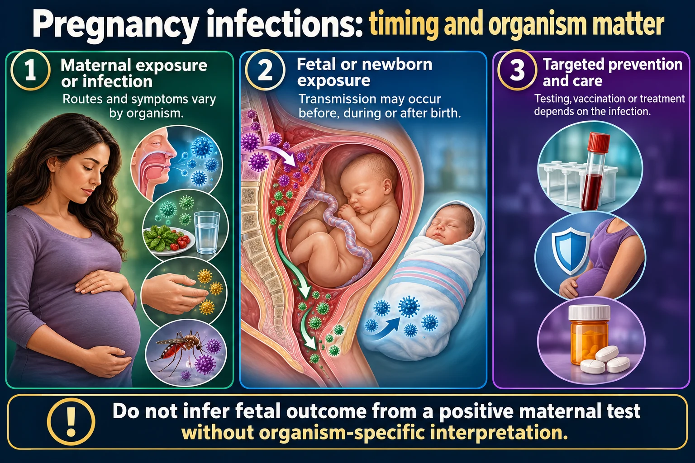

The infections that cross the placenta and harm the fetus. What to avoid, what to screen, what to treat.

The earlier it crosses, the worse the damage - because early is when the organs are being built.
Do not infer fetal outcome from a positive maternal test without organism-specific interpretation.
Maternal exposure or infection
Routes and symptoms vary by organism.
Fetal or newborn exposure
Transmission may occur before, during or after birth.
Targeted prevention and care
Testing, vaccination or treatment depends on the infection.
TORCH grouping
A memory aid for several congenital infections, not one disease.
Assessment
Exposure history, gestational timing and test results guide counseling.
Prevention
Food safety, hand hygiene, indicated screening and vaccination planning reduce selected risks.
A group of infections that cross the placenta or infect during birth, and cause congenital defects.
The earlier in pregnancy the infection occurs, the worse the damage — because that is when organs are forming. First-trimester rubella is the classic example.
| Infection | Effect on the baby | Prevention / teaching |
|---|---|---|
| Toxoplasmosis | Hydrocephalus, intracranial calcification, chorioretinitis | Do not change cat litter. Wear gloves gardening. Cook meat thoroughly. Wash produce |
| Rubella | Deafness, cataracts, cardiac defects, intellectual disability | Vaccinate BEFORE pregnancy; live vaccine, so not during |
| CMV | Commonest congenital infection; hearing loss, microcephaly | Hand hygiene, especially around diapers and toddlers |
| Herpes (HSV) | Neonatal herpes — severe, often fatal | C-section if active lesions at delivery |
| Syphilis | Stillbirth, bone and skin lesions, deafness | Screened routinely; penicillin treats it |
| Group B strep | Neonatal sepsis, pneumonia, meningitis | Screened at 35–37 weeks; IV antibiotics in labor |
| Varicella | Limb defects, scarring; severe if near delivery | Vaccinate before pregnancy |
A positive swab means IV antibiotics during labor — usually penicillin, ideally at least 4 hours before delivery so levels reach the baby.
GBS is normal flora in the mother and harmless to her. The risk is entirely to the newborn.
Newborns show infection non-specifically — often without fever:
A newborn who is simply "not feeding well and floppy" may be septic. Absence of fever means nothing at this age.